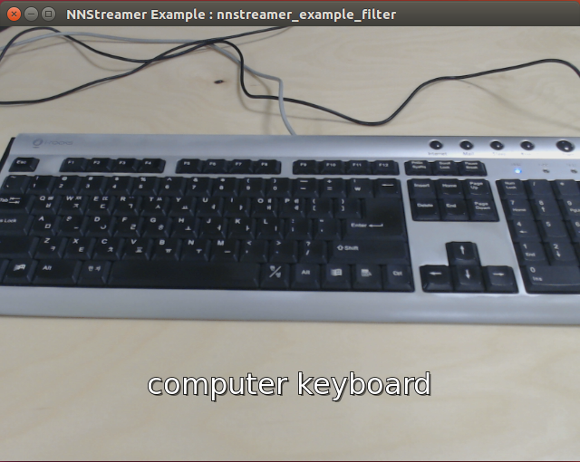
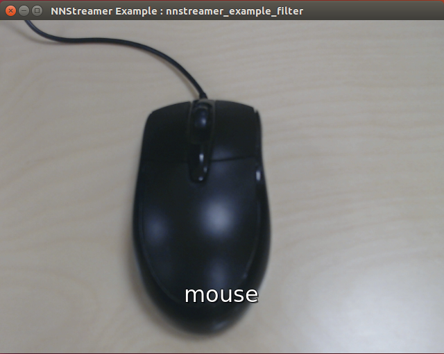

Note: More examples can be found here. nnstreamer-example
Table of Contents
- Preparing nnstreamer for execution
-
Usage Examples
- Example : camera live-view image classification. w/ gst-launch, decoded by tensor_decoder
- Example : camera live-view image classification, decoded by user application
- Example : camera live-view object detection, decoded by user application with Tensorflow-Lite
- Example : camera live-view object detection, decoded by user application with Tensorflow
- Example : video mixer with NNStreamer plug-in
- Example : tensor sink
Preparing nnstreamer for execution.
Use PPA
If you don't mind building binaries, you can directly download from PPA with daily releases:
- Download nnstreamer :
$ sudo add-apt-repository ppa:nnstreamer/ppa
$ sudo apt-get update
$ sudo apt-get install nnstreamer
Note that this may install tensorflow packaged by us.
- Download nnstreamer example :
$ sudo add-apt-repository ppa:nnstreamer-example/ppa
$ sudo apt-get update
$ sudo apt-get install nnstreamer-example
$ cd /usr/lib/nnstreamer/bin
As of 2018/10/13, we support 16.04 and 18.04
Build examples (Ubuntu 16.04 and 18.04)
- Install related packages before building nnstreamer and examples.
- ninja-build, meson (>=0.50)
- liborc (>=0.4.25, optional)
- tensorflow, protobuf (>=3.6.1)
- tensorflow-lite
-
Build options (meson)
- You can find the option definitions here: meson options
- For more information about meson build options itself, see here.
For example, to build and install NNStreamer by disabling tensorflow2-lite,
$ meson --prefix=${NNST_ROOT} --sysconfdir=${NNST_ROOT} --libdir=lib --bindir=bin --includedir=include -Dtflite2-support=disabled build -
Build source code
# Install packages for python example
$ sudo apt-get install python-gi python3-gi
$ sudo apt-get install python-gst-1.0 python3-gst-1.0
$ sudo apt-get install python-gst-1.0-dbg python3-gst-1.0-dbg
# Set your own path to install libraries and header files
$ sudo vi ~/.bashrc
export NNST_ROOT=$HOME/nnstreamer
export LD_LIBRARY_PATH=$LD_LIBRARY_PATH:$NNST_ROOT/lib
export GST_PLUGIN_PATH=$GST_PLUGIN_PATH:$NNST_ROOT/lib/gstreamer-1.0
# Include NNStreamer headers and libraries
export C_INCLUDE_PATH=$C_INCLUDE_PATH:$NNST_ROOT/include
export CPLUS_INCLUDE_PATH=$CPLUS_INCLUDE_PATH:$NNST_ROOT/include
export PKG_CONFIG_PATH=$PKG_CONFIG_PATH:$NNST_ROOT/lib/pkgconfig
$ source ~/.bashrc
# Download source, then compile it.
# Build and install nnstreamer
$ git clone https://github.com/nnstreamer/nnstreamer.git nnstreamer.git
$ cd nnstreamer.git
$ meson --prefix=${NNST_ROOT} --sysconfdir=${NNST_ROOT} --libdir=lib --bindir=bin --includedir=include build
$ ninja -C build install
$ cd ..
# Build and install examples
$ git clone https://github.com/nnstreamer/nnstreamer-example.git nnstreamer-example.git
$ cd nnstreamer-example.git
$ meson --prefix=${NNST_ROOT} --libdir=lib --bindir=bin --includedir=include build
$ ninja -C build install
$ rm -rf build
$ cd ..
- Download tensorflow-lite model & labels.
$ cd $NNST_ROOT/bin/
$ ./get-model.sh image-classification-tflite # for the example image classification
$ ./get-model.sh object-detection-tflite # for the example object detection
Usage Examples
Example : camera live-view image classification. w/ gst-launch, decoded by tensor_decoder
$ cd $NNST_ROOT/bin/
$ gst-launch-1.0 textoverlay name=overlay font-desc="Sans, 26" ! \
videoconvert ! ximagesink name=img_test \
v4l2src name=cam_src ! videoconvert ! videoscale ! video/x-raw,width=640,height=480,format=RGB ! \
tee name=t_raw \
t_raw. ! queue ! overlay.video_sink \
t_raw. ! queue ! videoscale ! video/x-raw,width=224,height=224 ! \
tensor_converter ! \
tensor_filter framework=tensorflow-lite \
model=tflite_model_img/mobilenet_v1_1.0_224_quant.tflite ! \
tensor_decoder mode=image_labeling \
option1=tflite_model_img/labels.txt ! \
overlay.text_sink
The stream pipeline in this example is:
[CAM] - [videoconvert] - [videoscale] - [tee] -+- [queue] - [videoscale] - [tensor_converter] - [tensor_filter] - [tensor_decoder] -+- [textoverlay] - [videoconvert] - [ximagesink]
+- [queue] --------------------------------------------------------------------------+
The same stream pipeline implementation with C-API is at nnstreamer-example.git/native/example_decoder_image_labelling/
Example : camera live-view image classification, decoded by user application.
[CAM] - [videoconvert] - [videoscale] - [tee] -+- [queue] - [textoverlay] - [videoconvert] - [ximagesink]
+- [queue] - [videoscale] - [tensor_converter] - [tensor_filter] - [tensor_sink]
Displays a video sink.
-
tensor_filterfor image recognition. (classification with 224x224 image) - Example application gets the buffer from
tensor_sink, then updates recognition result to display intextoverlay.
- Run example
$ cd $NNST_ROOT/bin/
$ ./nnstreamer_example_image_classification # run C/C++ example
$ python ./nnstreamer_example_image_classification.py # run Python example
- Screenshot
 
Example : camera live-view object detection, decoded by user application with Tensorflow-Lite.
[CAM] - [videoconvert] - [videoscale] - [tee] -+- [queue] - [videoconvert] - [cairooverlay] - [ximagesink]
+- [queue] - [videoscale] - [tensor_converter] - [tensor_transform] - [tensor_filter] - [tensor_sink]
Displays a video sink.
-
tensor_transformfor typecasting(uint_8tofloat32) and regularization ofother/tensorextracted from the previous element. -
tensor_filterfor SSD(Single Shot object Detection). It generatesother/tensorsas the output. - Example application gets the buffer from
tensor_sink, then updates recognition result to display incairooverlay.
- Run example - with execution file
$ cd $NNST_ROOT/bin/
$ ./nnstreamer_example_object_detection_tflite # run C/C++ example
- Run example - with bash script
$ cd $NNST_ROOT/bin/
$ ./gst-launch-object-detection-tflite.sh # run bash script example
- Screenshot
Example : camera live-view object detection, decoded by user application with Tensorflow.
[CAM] - [videoconvert] - [videoscale] - [tee] -+- [queue] - [videoconvert] - [cairooverlay] - [ximagesink]
+- [queue] - [videoscale] - [tensor_converter] - [tensor_filter] - [tensor_sink]
Displays a video sink.
-
tensor_filterfor SSD(Single Shot object Detection). It generatesother/tensorsas the output. - Example application gets the buffer from
tensor_sink, then updates recognition result to display incairooverlay.
- Run example - with execution file
$ cd $NNST_ROOT/bin/
$ ./nnstreamer_example_object_detection_tf # run C/C++ example
- Run example - with bash script
$ cd $NNST_ROOT/bin/
$ ./gst-launch-object-detection-tf.sh # run bash script example
- Screenshot
Example : video mixer with NNStreamer plug-in
[CAM] - [videoconvert] - [videoscale] - [tee] -+- [queue] -------------------------------------------------------+- [videomixer] - [videoconvert] -- [ximagesink (Mixed)]
+- [queue] - [tensor_converter] - [tensor_decoder] - [videoscale]-+
+- [queue] - [videoconvert] - [ximagesink (Original)]
Displays two video sinks,
- Original from cam
- Mixed : original + scaled (tensor_converter-tensor_decoder-videoscale)
In pipeline, converter-decoder passes video frame.
- Run example
$ cd $NNST_ROOT/bin/
$ ./nnstreamer_example_cam
- Screenshot
Example : tensor sink
Two simple examples to use tensor sink.
1. 100 buffers passed to tensor sink
[videotestsrc] - [tensor_converter] - [tensor_sink]
Displays nothing, this sample code shows how to get buffer from tensor sink.
- Run example
$ cd $NNST_ROOT/bin/
$ ./nnstreamer_sink_example
2. launch two pipelines
[videotestsrc] - [tensor_converter] - [tensor_sink]
[appsrc] - [tensor_decoder] - [videoconvert] - [ximagesink]
[push buffer from tensor_sink to appsrc]
Displays video sink.
Tensor sink receives buffer and pushes it into appsrc in 2nd pipeline.
- Run example
$ cd $NNST_ROOT/bin/
$ ./nnstreamer_sink_example_play
The results of the search are